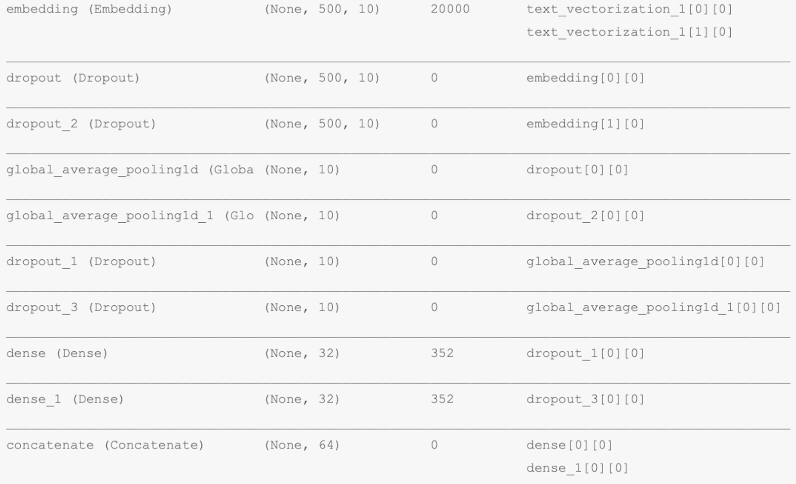
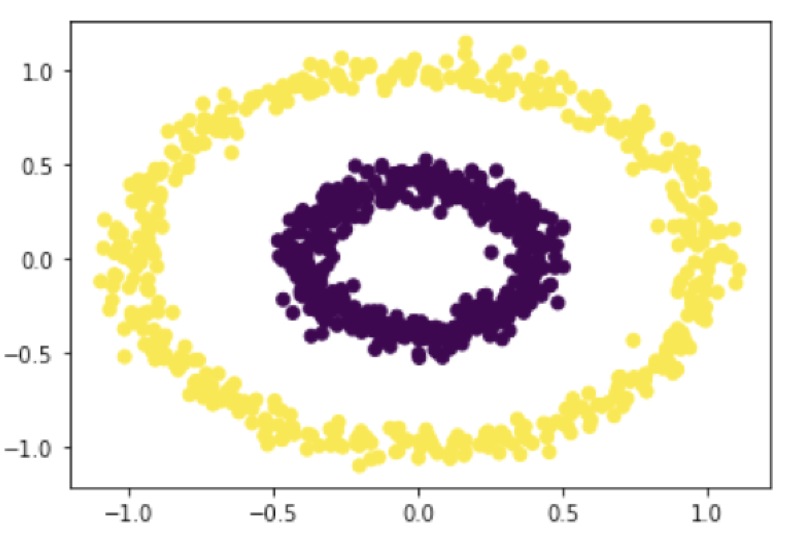
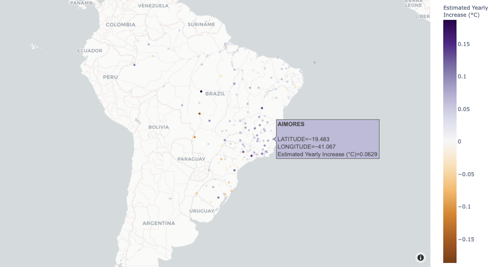

Colorful ClassificationsMay 2023
Colorful ClassificationsMay 2023
Crafting Neural Networks for CIFAR Image Analysis.
Python • Deep Learning • Torch • CIFAR • Loss Function
Read More Deciphering DigitsApril 2023
Deciphering DigitsApril 2023
Tailoring Neural Networks for MNIST Recognition.
Python • Deep Learning • Torch • MNIST • Loss Function
Read More Linear ModelsOctober 2022
Linear ModelsOctober 2022
Handcrafting Ridge & Lasso Regressions to Dissect Errors.
Python • Scipy • Linear Algebra • Ridge Regression • Lasso • Error
Read MoreLA Travel PlannerJune 2021
A comprehensive endeavor combining web scraping and web development to accumulate an extensive database of Los Angeles' tourism locations.
SQL • Python • Flask • WebScraping • Geopy
Read MoreBuilding a Fake News Classifier with TensorflowMay 2021
Crafting an intricate machine learning model designed to discern between genuine and fake news articles.
Python • Pandas • Plotly • PCA • TensorFlow
Read MoreUnlocking Data Secrets with ClusteringApril 2021
An intricate investigation into large datasets, utilizing advanced spectral clustering techniques to categorize and unravel hidden groupings.
Python • NumPy • Spectral Clustering • K-Means • Linear Algebra • Classification
Read MoreUnveiling Climate TrendsMarch 2021
An extensive exploration of global temperature trends and climate fluctuations in diverse geographic landscapes over decades.
SQL • Python • Pandas • Plotly • Interactive Geographic Graphs • Linear Regression
Read More World Happiness Report AnalysisFeburary 2021
World Happiness Report AnalysisFeburary 2021
A deep dive into the correlation between GDP per capita, social support, healthy life expectancy, freedom, and overall happiness scores across nations.
Python • Pandas • Economy • Correlation
Read More Economic Echoes of a Health CrisisFeburary 2021
Economic Echoes of a Health CrisisFeburary 2021
Analyzing Dow Jones in the Wake of COVID-19.